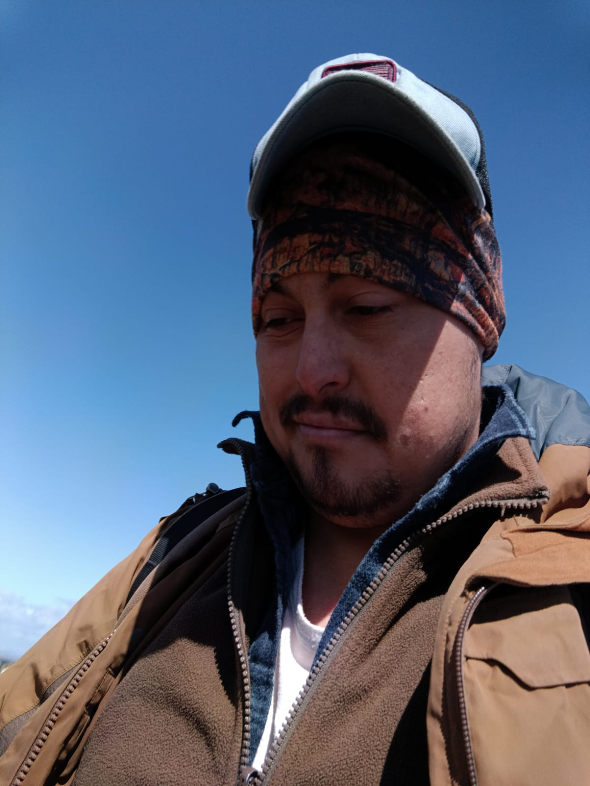

Conoce a nuestros expertos
El equipo local que te acompañará en el fin del mundo

Daniel
Guía Especialista en Trekking
Experto en Fuerte Bulnes, historia regional y rutas de senderismo austral.

Próximo Guía
Especialista en Fauna Marina
Navegación al Estrecho de Magallanes y avistamiento de pingüinos en Isla Magdalena.